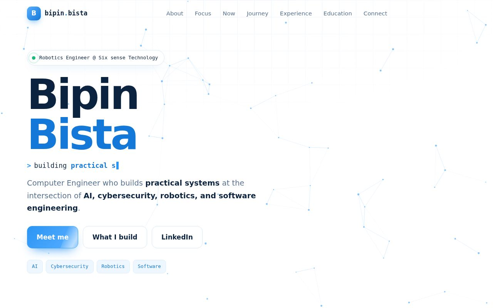
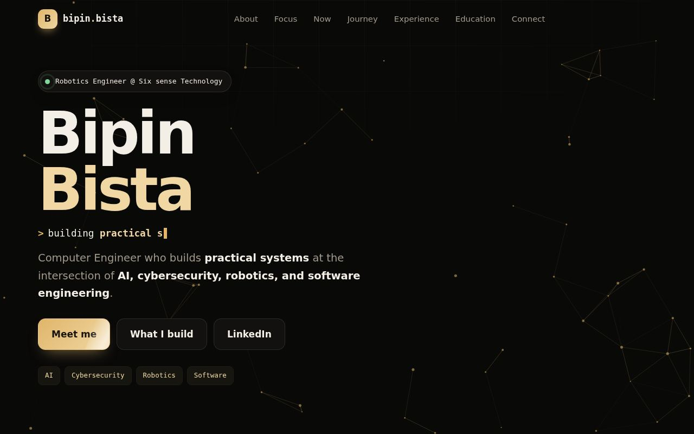
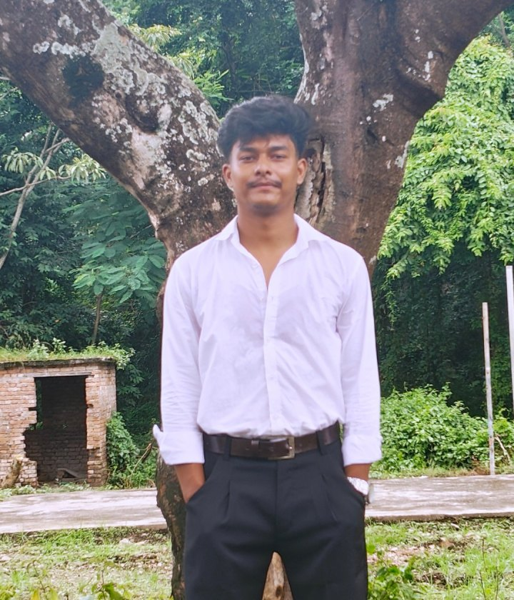

01 // AI
Artificial Intelligence
Turning data into decisions. I explore machine learning and intelligent automation that work on real inputs and solve practical problems.
Computer Engineer who builds practical systems at the intersection of AI, cybersecurity, robotics, and software engineering.



A Computer Engineer who builds practical systems at the intersection of AI, cybersecurity, robotics, and software engineering.
I like the point where a model, a sensor, a motor, and a secure connection all have to agree with each other. That is where ideas stop being demos and start being systems that actually work.
I study Computer Engineering at Tribhuvan University, IOE, Purwanchal Campus, work as a Robotics Engineer at Six sense Technology, teach robotics at Utthan Robotics Lab, and serve as Vice President of ACES. Mentoring and communication are as much a part of engineering for me as code and circuits.
I do not treat these as separate worlds. The best systems borrow from all four.
Turning data into decisions. I explore machine learning and intelligent automation that work on real inputs and solve practical problems.
Secure by design. I think about how systems can fail or be attacked, so what I build is safer from the first line.
My daily work. Building and teaching robots, from sensors and motors to the control logic that ties them together.
The glue. Clean, maintainable code that connects models, hardware, and people, built to be used and not just shown.
Robotics reads the world through sensors.
AI turns raw signals into decisions.
Security keeps the whole loop trustworthy.
Software turns it into something people use.
sense → think → protect → ship → repeat
Studying, building, teaching, and leading, all at the same time.
Six sense Technology Pvt Ltd. Full-time, on-site in Dharan.
May 2026 - PresentTribhuvan University, IOE, Purwanchal Campus.
2024 - PresentAssociation of Computer Engineering Students (ACES).
Feb 2026 - PresentUtthan Robotics Lab Pvt. Ltd.
Oct 2024 - PresentScroll to follow the path. Each step built on the one before it.
Computer Engineering at Tribhuvan University, IOE, Purwanchal Campus.
Utthan Robotics Lab Pvt. Ltd.
Association of Computer Engineering Students (ACES).
Association of Computer Engineering Students (ACES).
Six sense Technology Pvt Ltd, Dharan.
Study and work did not take turns. They overlapped.
Professional engineering, teaching, and leadership.
Six sense Technology Pvt Ltd
My current professional role, working in robotics alongside my undergraduate degree.
Utthan Robotics Lab Pvt. Ltd.
Teaching robotics, where engineering practice meets mentoring and communication.
Association of Computer Engineering Students (ACES)
Joined ACES as an Executive Member in January 2025 and became Vice President in February 2026.
Tribhuvan University, Institute of Engineering (IOE), Purwanchal Campus
2024 - PresentMy degree is not on pause while I work. Classroom theory and robotics practice feed each other every week.
Find me on these platforms.